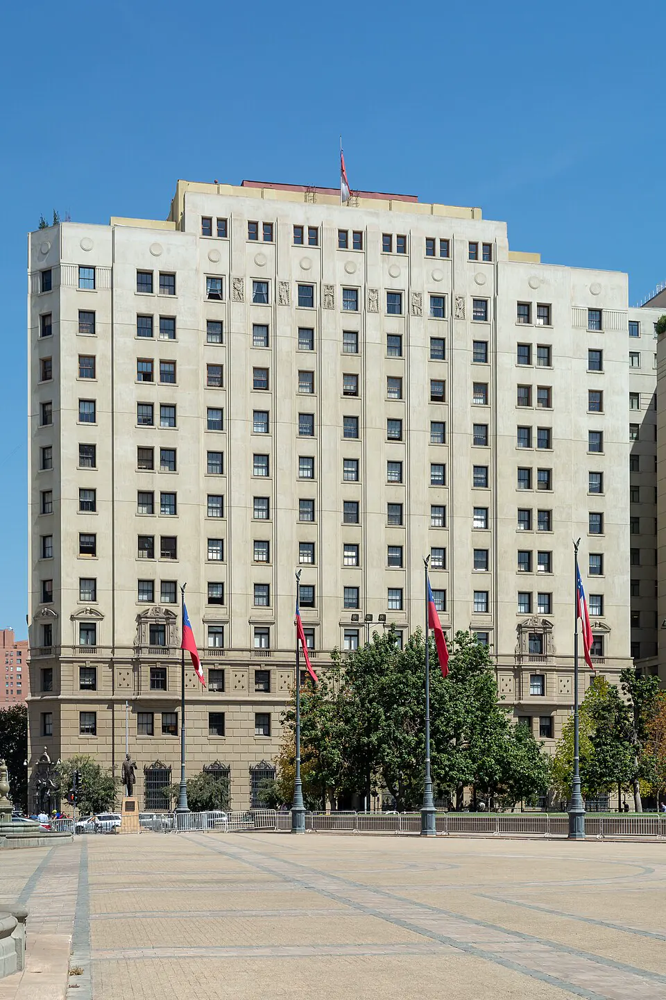

Modelo económico neoliberal

Tras el golpe, la dictadura enfrentó una inflación muy alta y una economía en crisis. En abril de 1975, el ministro de Hacienda Jorge Cauas aplicó un programa de choque que recortó fuertemente el gasto público y provocó una profunda recesión. Desde entonces, un grupo de economistas formados en la Universidad de Chicago, los "Chicago Boys", entre ellos Sergio de Castro, impulsó un modelo neoliberal: privatización de empresas estatales, apertura al comercio exterior con aranceles bajos, liberalización de precios y del sistema financiero, y reducción del rol del Estado. A fines de los setenta y comienzos de los ochenta, el modelo se extendió a áreas sociales con el Plan Laboral (1979), el sistema de pensiones de capitalización individual o AFP (1980) y la municipalización de la educación. En 1982, una grave crisis financiera elevó el desempleo y obligó al Estado a intervenir bancos; desde mediados de la década, la economía se recuperó y creció con fuerza. Las reformas se aplicaron sin debate democrático y con los sindicatos reprimidos. Su balance sigue en discusión: sus defensores destacan el crecimiento, el control de la inflación y la modernización; sus críticos, la desigualdad, la concentración económica y los costos sociales. Los gobiernos democráticos mantuvieron sus bases, con reformas sociales.
Versión para niños
Después de 1973, el gobierno militar cambió la forma en que funcionaba la economía de Chile. Un grupo de economistas, conocidos como los "Chicago Boys", propuso que el Estado tuviera menos empresas y que las personas y las empresas privadas tomaran más decisiones. Se vendieron muchas empresas del Estado y Chile empezó a comprar y vender más productos con otros países. Algunas personas creen que esto ayudó a que el país creciera; otras piensan que aumentó las diferencias entre ricos y pobres.
Para maestros
Nivel sugerido: 2° medio
Objetivo: Caracterizar las transformaciones económicas implementadas en dictadura y evaluar sus efectos desde distintas perspectivas.
Preguntas para la clase:
- ¿Qué cambió en el rol del Estado en la economía después de 1975?
- ¿Qué efectos de estas reformas siguen presentes en la vida cotidiana de hoy?
- ¿Por qué es importante considerar que estas reformas se aplicaron sin democracia?
Actividad (20–30 min): Los estudiantes comparan en una tabla el rol del Estado en la economía durante la República Presidencial y durante la dictadura (empresas, comercio exterior, educación, pensiones). Luego cada grupo redacta un argumento a favor y uno en contra del modelo, apoyados en datos.
Fuentes sugeridas: Memoria Chilena; Biblioteca del Congreso Nacional (BCN); Banco Central de Chile.
Objetivos de Aprendizaje (Currículum Nacional)
- 2° medio · HI2M OA 11 Analizar los principales procesos que marcaron el fin de la Guerra Fría … el auge del neoliberalismo y la aceleración de la globalización
- 2° medio · HI2M OA 17 Caracterizar el modelo económico neoliberal implementado en Chile durante el régimen o dictadura militar, considerando aspectos como la transformación del rol del Estado
- 3° medio (Educación Ciudadana) · FG-ECIU-3M-OAC-04 Evaluar las relaciones entre el Estado y el mercado, considerando temas como sueldos justos, productividad, carga tributaria
Revisión humana pendiente. Cómo se revisa · Reportar un error
Cómo citar: Historia de Chile. (2026). Modelo económico neoliberal. En Historia de Chile: atlas y línea de tiempo. https://moises-salgado.github.io/historia-de-chile/momento/modelo-economico-neoliberal.html